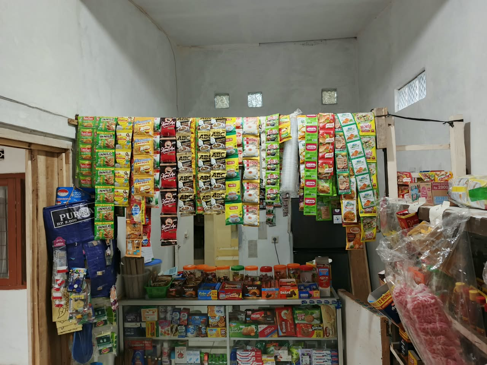
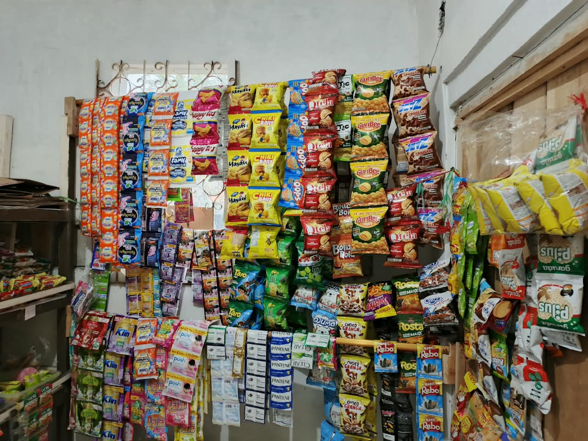
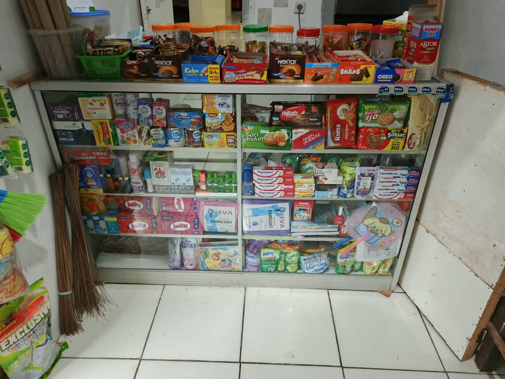
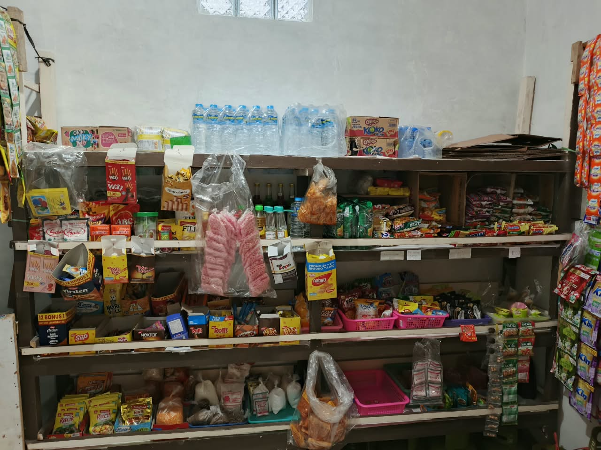
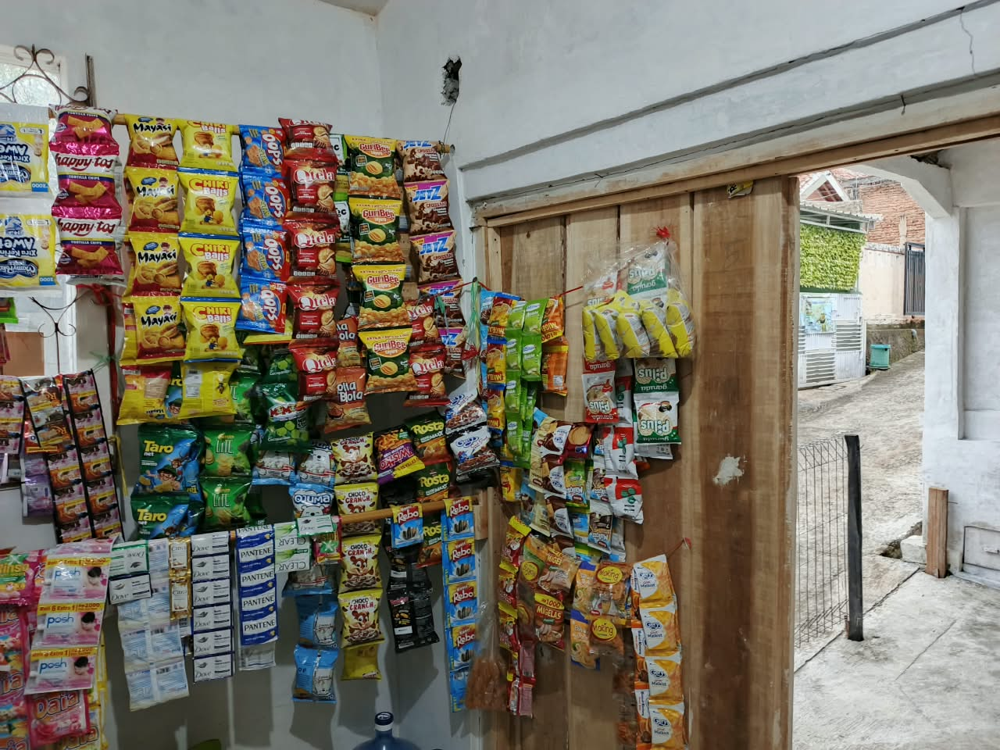
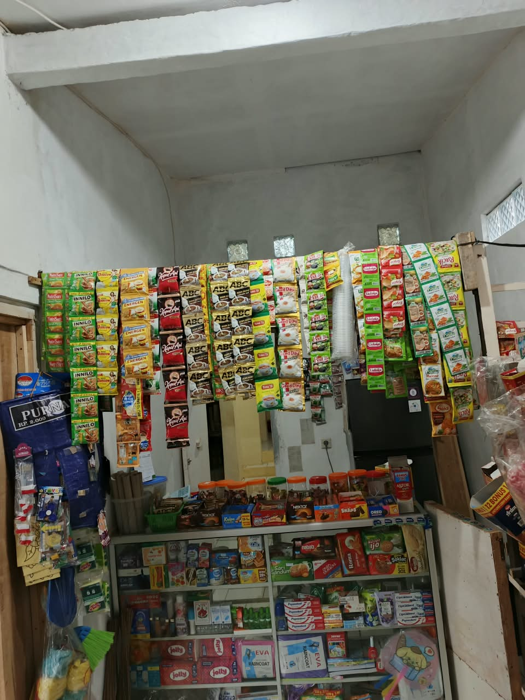

Warung kelontong · Gang Melati, Banjar
Butuh gula, kopi, atau sabun? Mampir aja ke Bu En.
Sembako dan kebutuhan harian lumayan lengkap, harga ecer ramah kantong, dan warungnya cuma beberapa langkah dari rumah. Nggak sempat keluar? Tinggal chat, nanti Bu En yang siapin.
Biasanya dibalas cepat, kecuali pas warung lagi ramai.

mulaiRp 2.000
Kenapa tetangga sering mampir ke sini?
Bukan karena ada promo besar-besaran. Biasanya cuma karena barangnya ada, harganya wajar, dan nggak perlu jauh-jauh.
-
Barangnya lumayan lengkap
Dari bumbu dapur, kopi sachet, jajanan, sampai perlengkapan mandi dan alat tulis anak sekolah. Sekali mampir, biasanya langsung ketemu.
-
Harga ecer ramah kantong
Bisa beli satuan, nggak harus borong. Ada barang mulai Rp 2.000, cocok buat kebutuhan mendadak.
-
Dekat dan cepat
Tinggal jalan sebentar, atau chat kalau lagi malas keluar. Bu En siapkan, tinggal diambil atau diantar.
Intinya, kalau lagi kehabisan sesuatu di rumah, tinggal mampir atau chat. Nggak perlu naik motor jauh-jauh.
— Bu EnMau titip belanja?
Chat Bu En sekarangIsi warungnya, kira-kira begini
Nggak semua barang kelihatan dari depan. Kalau yang dicari nggak ada di rak, tanya aja—bisa jadi masih ada di belakang.
-
Kopi, teh & minuman sachet Kapal Api, ABC, Good Day, Tong Tji, Energenmulai 2rb
-
Mi instan & bumbu dapur Mi instan, Racik, Sasa, Ladaku, kecapmulai 2rb
-
Jajanan & camilan Chiki, Qtela, Guribee, Taro, Oreo, Romamulai 2rb
-
Perlengkapan mandi & cuci Sampo sachet, Pepsodent, Sunlight, Rapika, Kleenmulai 2rb
-
Lain-lain Jas hujan, alat tulis, air galon, sapumulai 5rb
Geser buat lihat raknya →




2014
Kata tetangga sekitar
Nggak ada ulasan bintang lima. Ini cuma cerita sehari-hari dari orang yang memang sering belanja di sini.
Biasanya saya cuma beli telur sama kopi sachet. Tapi kalau lagi kehabisan sabun atau galon, tinggal chat, nanti Bu En siapin. Cocok buat yang malas keluar rumah.
Anak saya langganan jajan Chiki sama Taro di sini. Harganya sama kayak warung lain, cuma Bu En-nya ramah, jadi sering ikut ngobrol dulu.
Waktu ada acara kecil di rumah, saya pesan kopi sachet sama air galon. Dibilangin mau dipakai kapan, terus disiapin. Nggak ribet.

Mau belanja tanpa keluar rumah? Chat aja dulu.
Chat Bu EnYang sering ditanya
Kalau masih ada yang mau ditanyain, langsung chat aja. Nggak harus langsung beli kok.
Tanya Bu En di WhatsAppBiasanya buka pagi sekitar jam 06.00 sampai malam jam 21.00. Kalau pas ada acara keluarga, kadang tutup sebentar. Paling aman chat dulu sebelum ke sini.
Warung Sembako Bu En
Belanja nggak perlu jauh-jauh. Chat aja dulu.
Tinggal tulis barangnya, nanti Bu En cek stok dan siapkan. Kalau lewat, mampir langsung juga boleh kok.
Chat Bu En di WhatsAppAlamat warung
Jl. Melati No. 12, Gang Mangga, RT 03/RW 05, Banjar, Jawa Barat
Patokan: dekat musala, depan gang.
Buka di Google Maps